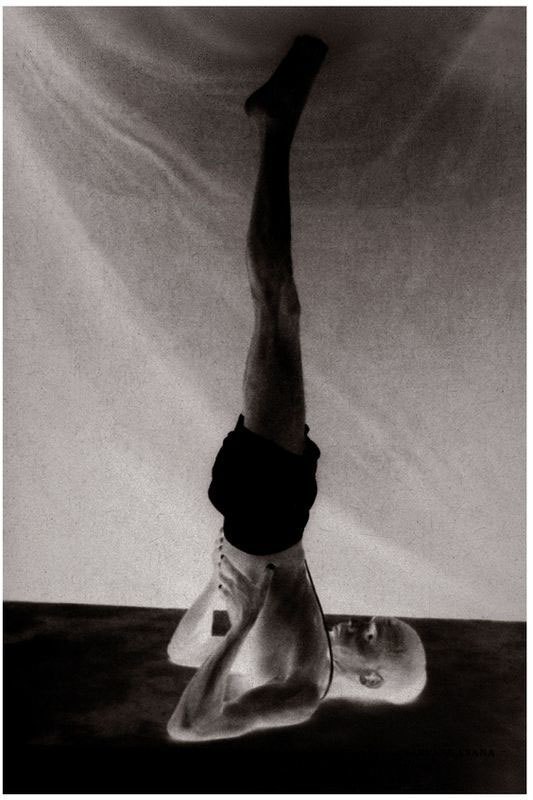

Sarvangasana has thirteen vinyasas, of which the 8th is its state. As the next five asanas are related to Sarvanagasana, I will describe their respective fruits collectively.
METHOD
To begin, do the first six vinyasas of the first Surya Namaskara. Next, coming into the 7th vinyasa of paschimattanasana, lie down, arms by the sides and legs straight; this is the 7th vinyasa, during which puraka and rechaka should be done four to five times deeply. Then, with the legs held straight and tightly together, slowly raise the legs up over the head, doing puraka, and put the full weight of the body on the shoulders only, hands holding the waist, and elbows pressed to the floor; this is the 8th vinyasa. (In the 8th vinyasa, the chin should press into the chest properly, the legs be held straight, and the big toes and tip of the nose should form a single line.) (See figure.) Stay in this state for five, ten, fifteen, even thirty minutes, doing rechaka and puraka deeply. Then, lower the legs toward the head, doing rechaka, place the hands on the floor on either side of the head, push the legs back and behind and, lifting the head, come into the 4th vinyasa of the first Surya Namaskara; this is the 9th vinyasa. Then follow the vinyasas specified in earlier asanas.
